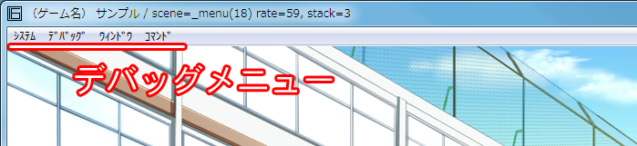

サンプルの起動
サンプルの起動まずはサンプルを起動して下さい。 ◇Siglus\◇サンプル開発環境\exe\SiglusEngine.exe デバッグモードで起動する開発中は、デバッグモードで起動することをお勧めします。 SiglusDebugger3.dll が必要です。 ◇Siglus\◇サンプル開発環境\work\SiglusDebugger3.dll
SiglusEngine Ver.1.1.0.0 より、SiglusDebugger2.dll → SiglusDebugger3.dll に変更されました。
デバッグモードで起動するには、いくつかの方法があります。
一番簡単な方法です。ただし、製品時に取り除く必要があります。忘れやすいのであまりお勧めしません。 常にデバッグモードで起動できます。逆にリリースモードで起動するために、コンパイラが必要になります。 コンパイラの操作が必要になります。お勧めの方法です。
SiglusEngine Ver.1.0.4.2 より、セキュリティ強化のため、コマンドラインからの起動はなくなりました。ご了承下さい。
コンパイラを使ってデバッグモードで起動する◇Siglus\◇サンプル開発環境\SiglusCompiler.exe コンパイラを起動し、「新規」ボタンでプロジェクトを作成します。 出てきた「プロジェクトを追加」ダイアログで、以下の設定をして下さい。
ファイルやフォルダを、入力欄にドラッグ＆ドロップすることで、簡単に設定することができます。 多くのツールがこの方法に対応しています。 [ ＯＫ：プロジェクトを【追加】する ] を押してください。 ダイアログ左の「実行」ボタンを押すと、デバッグモードで起動できます。 作業フォルダを指定した場合、セーブデータも作業フォルダに出力されます。 製品版に間違って入れてしまうのを防ぐことができます。 開発中はこの方法で起動することをお勧めします。 デバッグモードで起動すると、ウィンドウ上部にデバッグメニューが表示されます。  基本操作の他、システムコマンドメニュー、デバッグメニューを１通り触ってみてください。 |